マルゼン エアガン CA870 ストック 【エアガン レビュー】
マルゼンのコッキングエアガンCA870はベースモデルのCA870ソードオフをはじめ、折畳み式ストック装備のフォールドや、M4カービンの伸縮ストックを装備したチャージャー、そして今回レビューする固定ストック装備のCA870ストックなどがある。 >CA870シリーズいろいろその名が示すようにモデルとなった実銃はレミントンM870ショットガンだ。
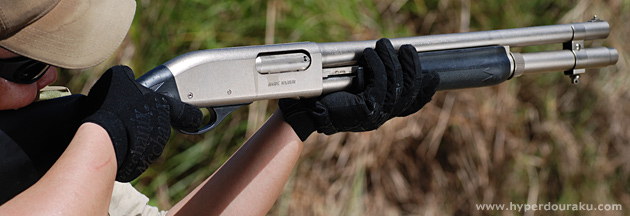
M870はポンプアクション式のショットガンで、狩猟・スポーツ用途をはじめ、警察やミリタリーにおいても幅広く使用されている。ショットガンはショットシェルと呼ばれる薬莢に、鉛が粒状になった散弾や、大きな一粒の鉛のスラッグ弾が詰まった各種弾薬が使用できる。上記の写真でいうと黒いフォアグリップの中に通された筒状のものがチューブ式マガジンとなっていて、ここに7発のショットシェルが直列に収まっている。そしてハンドガードを手前にスライドさせ、再び前方へ戻すとショットシェルをチャンバーに1発づつ装填できる。この操作がポンプアクションと呼ばれる所以である。
| マルゼン エアガン CA870 ストック スペック & 初速データ | |||||||||||||||||||||
|
|
||||||||||||||||||||
今回レビューするマルゼンのCA870ストックは基本モデルのソードオフに固定ストックを標準装備したモデル。ソードオフの切り詰めたバレルに照準が安定する固定ストックの組み合わせは、いかにもゲーム向き。価格もリーズナブルなので1丁買っておこうと思ったのだが、ソードオフの在庫はあるものの、ストックがなかなかなく入手するのに苦労した。メーカーの増産を期待したい。
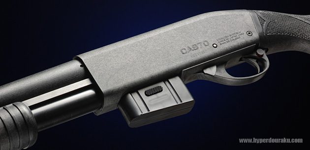
硬質感のあるグラスファイバー樹脂製のレシーバー左側面にはCA870の刻印。その下にはシリアルナンバーが打ってある。
流線型のトリガーガード前のレバーは実銃で言うところのアクションバーロックでダミーとなっている。トリガーガード後ろの丸いボタン状のものがマニュアルセフティで、右側から押して赤いラインが側面に現れるとセフティオフで射撃可能。逆にセフティオンにするには左側面からボタンを押し込めばトリガーがロックされる。
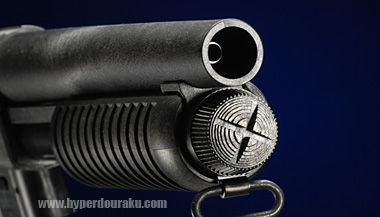ソードオフ(短くバレルを切り詰めること)されたアウターバレル。大口径のマズルが迫力だ。
インナーバレル長はメーカー公称で230mm。バレルは固定されているので命中精度にも貢献するはず。
なお、1回のコッキングで発射されるBB弾は1発。ショットガンとのギャップを感じるのは致し方ない。
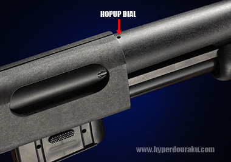ソードオフは固定ホップだが、このストックモデルは可変ホップアップ機構を標準装備している。
バレル根元上部に小さな穴があり、この部分に付属の六角レンチを入れてネジを回して調節する。
0.2gBB弾ではホップ最弱でもちょっうど良いくらいのホップ係り具合。風に影響されないようにちょっと重めの0.25gBB弾を使用してさらに命中精度を上げても良い。
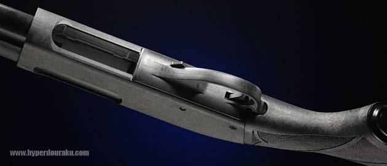
トリガーメカニズムはマルゼンの高精度スポーツライフルであるAPSシリーズのものを引き継いだ「APSシステム」が採用されており、切れがよく、軽いトリガープルとなっている。
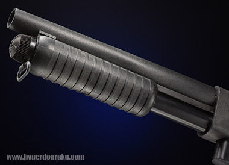樹脂製のフォアグリップ。 コッキングは軽くスムーズ。二度引き防止機構も備わっている。
コッキングのストロークは約72mm。
フォアグリップもストックもブラックで統一されていて精悍なイメージだ。
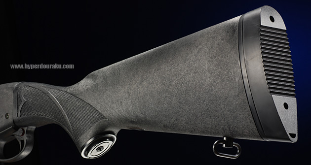
グラスファイバー樹脂製の固定ストック。軽くて扱いやすい。無塗装で素材の色合いをそのまま活かしている。若干グレー気味だが、シリコンオイルを塗布することで表面がならされ、しっとりとした黒い風合いに変化する。リコイルパッド部分はプラ製。
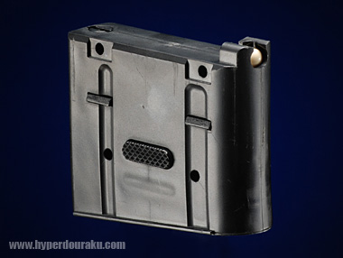ボックスマガジンは軽量なプラ製で6mmBB弾を40発装填できる。スペアマガジンが1個680円(税抜)と格安なのも嬉しい。リップ式のスプリング給弾なので最後の1発まで確実に撃ち切ることができ、残弾のある状態でマガジンを抜いても弾がこぼれることもない。
ショットガンでボックスマガジンというのはちょっと、というユーザーにはG&Pから22連ショートマグも発売されている。
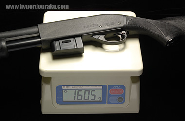実測重量は1605g。
重量バランスも良い。
ショットガンというと、ついついベッドサイドに立て掛けたくなるこの気持ち。解っていただけるだろうか。
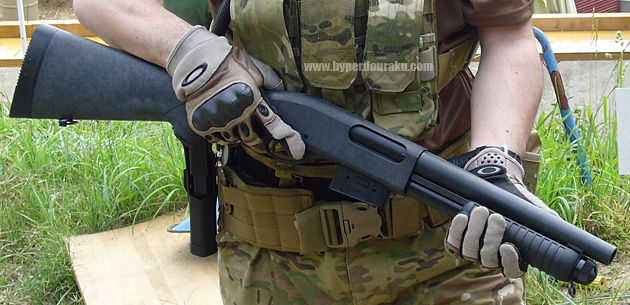
実際に先日のゲームで使用してみた。さすがにフルオート戦ではしんどそうなので、セミオート戦のメインアームとして使用することにした。コッキングは軽くスムーズで連射も容易。シャカポコン、シャカポコンと軽快な射撃音。まるで80年代のサバゲを想起させる。弾道は非常に素直で電動ガンよりも真っ直ぐ飛ぶ。そういえばマルゼンはKG9という80年代を代表する銘エアガンを作っていたメーカーだった。
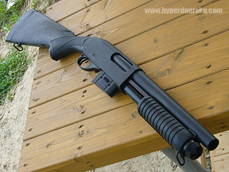ただ残念なことにノーマルでは照準するものがまったくない。したがってレシーバー上面を見ながらカンで撃つしかないのだが、メーカーから専用のアルミ製マウントベースが発売されているのでオプションとして購入しておくのが良いだろう。
これにスコープを載せればスナイパーも可能なほどに精度は抜群。

総評として、軽くコンパクトで取り回しが良く、コッキングタイプとしては40発の装弾数も十分。命中精度はAPSボルトアクションライフル並みで、本体価格もスペアマガジンもリーズナブル。ポンプアクションにより素早いコッキングが可能なので、ボルトアクションライフルに比べてファイアパワーがあるのも魅力。ストックモデル以外でもソードオフモデルをサイドアーム代わりに背負っておくというのも渋い。そしてなによりも、いざというときに確実に弾が発射されるという安心感はゲームにおいて絶大な信頼感につながるだろう。これを使っているともっとセミオート戦がクローズアップされても良いかなと思ってしまう。かなりおススメのアイテムだ。
その後、CA870をタクティカルにカスタムしてみました。
2009/05/31
■関連レビュー
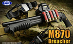 東京マルイ ガスガン M870ブリーチャー
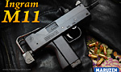 マルゼン ガスガン ニュー イングラム M11
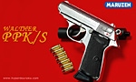 マルゼン ガスガン ワルサーPPK/S ムービープロップシリーズ
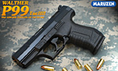 マルゼン ガスガン ワルサーP99 TacIII